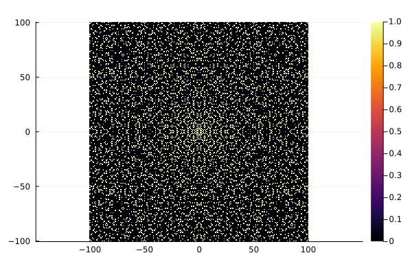
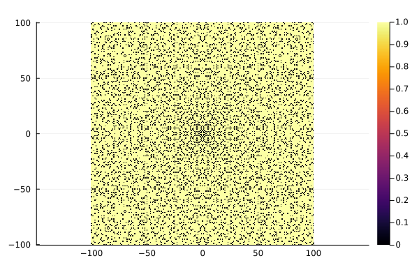
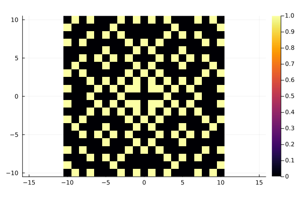
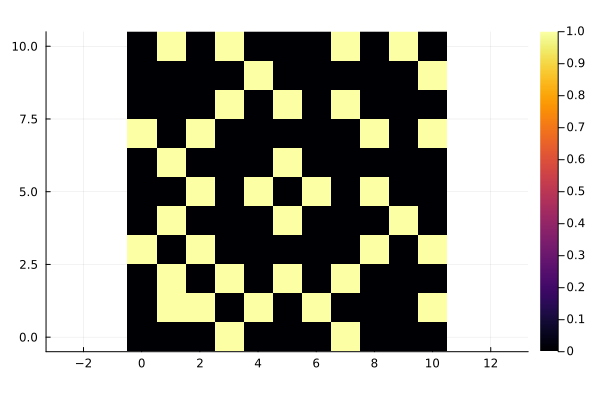

ThieleTiles
Documentation for ThieleTiles.
This package is inspired by this paper by Steffen L. Lauritzen: http://web.math.ku.dk/~lauritzen/papers/ThieleOgGulvfliser.pdf (in Danish) abut the floow tiles designed by Thorvald Nicolai Thiele (1838-1910).
Background
The tilings are based on rings of complex integers.
In particular:
- Gaussian integers: $ Z[i] = { x = a + ib \in C | a, b \in Z, i^2 = -1 } $
- Eisenstein integers $ Z[\omega] = { x = a + \omega b \in C | a, b \in Z, \omega = (1- i\sqrt(3))/2) } $
There is a package implementing Gaussian integers using AbstratctAlgebra.jl https://github.com/ulthiel/GaussianIntegers.jl
The examples described in the paper relate to Gaussian primes and Quadratic residues
Examples
Gaussian Primes
A Gaussian integer $z = a + ib$ is a gaussian prime iff one of the following holds:
- a*b != 0 and a^2 + b^2 is a prime (in Z)
- a = 0 and |b| is prime and |b| == 3 mod 4
- b = 0 and |a| is prime and |a| == 3 mod 4
Eg 7 is a Gaussian prime, but 5 is not.
This packages implements a function to tile the lattice of complex integers according to this property. As most gaussian integers are not primes, the function includes an option to invert the colors to get a mainly light tiling.
using Plots
using ThieleTiles
plot_gaussian_primes(100)
plot_gaussian_primes(100; invert_colors = true)


The function can also take (non-symmetric) ranges:
plot_gaussian_primes(10)
plot_gaussian_primes(0:10, 0:10)

